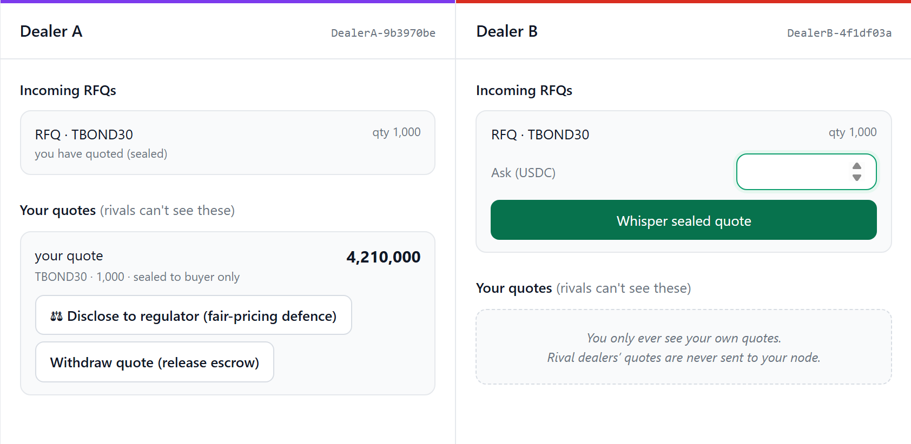
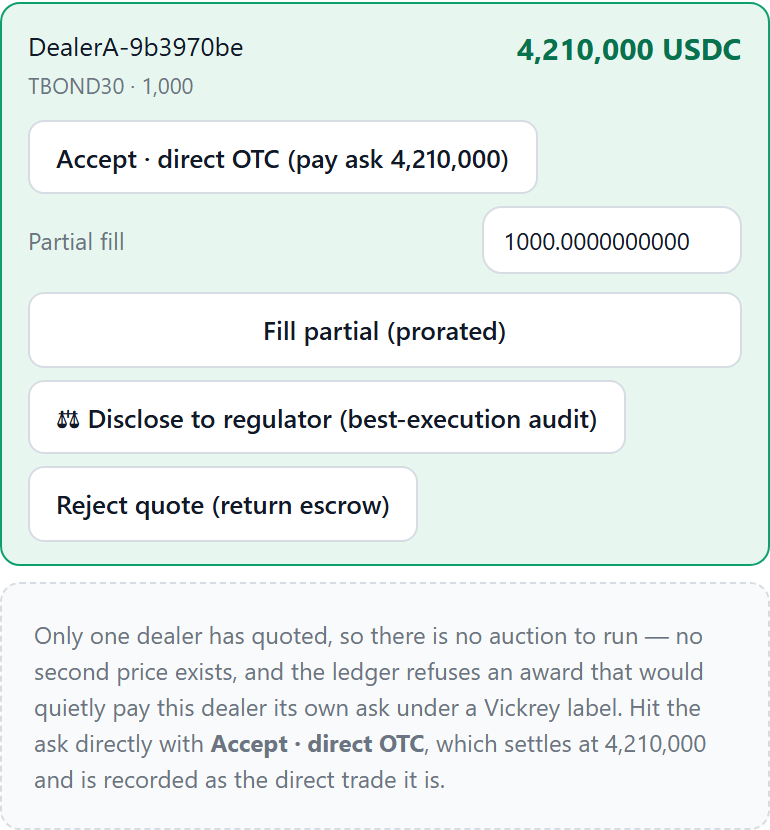
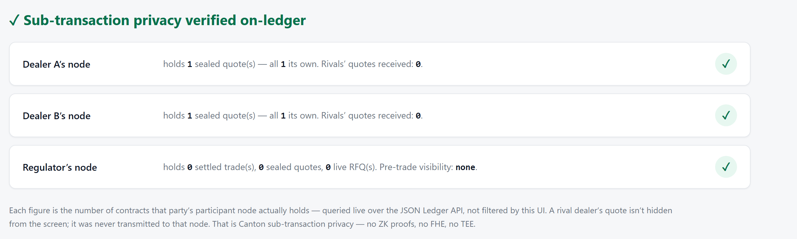
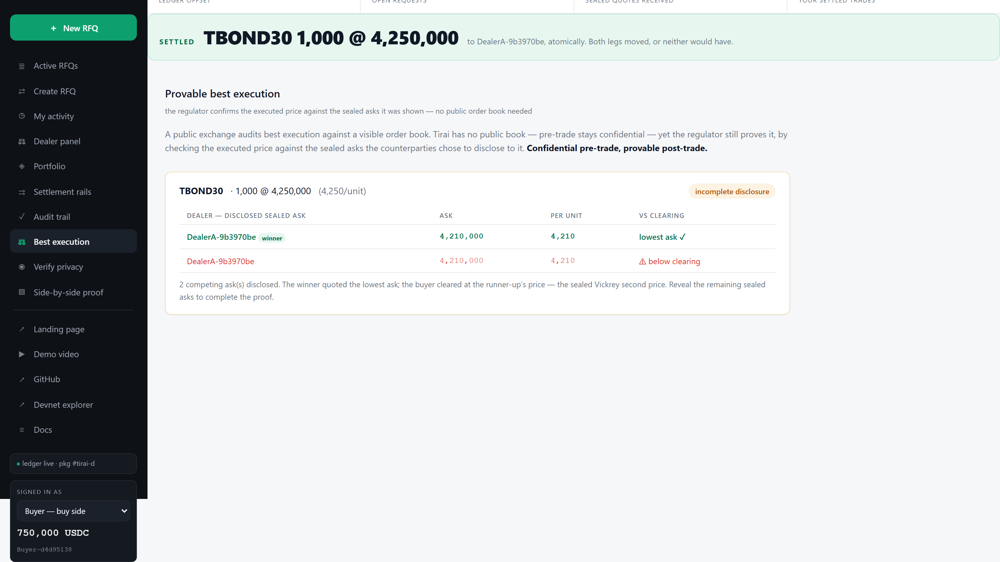
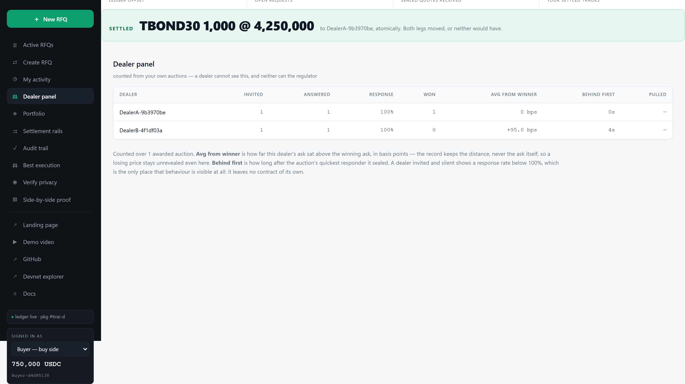

Canton Builders Office Hours · 2 September 2026
tirai.
The confidential multi-dealer RFQ desk, built native on Canton. Sealed quotes, atomic delivery-versus-payment, provable best execution.
You whisper quotes. The market hears nothing.
Pugar Huda Mantoro · solo builder · HackCanton Season 2, 3rd place
An institution wants to move a block of bonds. Before it can trade, it has to ask several dealers what they would pay.
The moment anyone sees you asking,
they know your size and your direction.
Which is why block trading in 2026 still happens on the telephone
Four steps, and the market sees none of them
Two, three, five dealers, chosen by the buyer. The request reaches their nodes and no others.
Quoting moves that dealer’s bond into escrow. A price is a commitment, not a bluff.
So shading your quote costs you deals without ever improving your margin.
Bond and cash move together, or neither moves. No settlement window.

On the left, Dealer A, having sealed 4,210,000. On the right, Dealer B’s own session at the same moment, reading its own participant node. Not a masked row. Not a commitment hash waiting to be revealed. Nothing.
Jason said about forty lines of Daml. Honestly, this part is two.
The regulator’s party id is a field on that contract, and the regulator still cannot see it. Being named in a contract is not being a stakeholder in it.
No third party to hide from,
so nothing to encrypt.
Four previous builds of this product on transparent chains. TEE · ZK circuits · threshold encryption · FHE

Escrow on quote. Submitting a price moves that dealer’s bond into escrow before the buyer ever sees the number. An indication is free, and anything free gets abused in a sealed auction. Quote aggressively everywhere, decide later whether to honour it. Here the buyer never awards into a bluff, and the dealer is never left holding a counterparty who changed their mind.
And the worst bug I have shipped. With one quote there is no second price. Awarding used to fall back to the winner’s own ask. First price wearing a Vickrey label, chosen after the buyer had seen every sealed number, with the dropped quote never revealed to anyone.
The ledger refuses it outright now. A buyer who wants to lift an ask uses the direct rail, where it is recorded as the direct trade it is. The regression test is named after the bug.

One read per party, addressed to that party’s node, counting what came back. Four reads, four parties, four different answers, visible in your own devtools. The claim is checkable from your side of the screen, not mine.

A public exchange proves best execution against a visible order book. There is no book here. Either side can reveal a sealed ask to the regulator on demand, without ever showing a rival, and the executed price is checked against it. Confidential before the trade, auditable after it.

An invited dealer does see the enquiry, and no ledger stops that. What changed: every award now writes a record the buyer keeps. Who was invited, who answered, and how far each ask was from the winner’s in basis points, never the ask itself. A losing price stays unrevealed even in the buyer’s own record. A dealer who takes the look and never prices is on the ledger, timestamped, attributable.
Cash legs settle through registries I neither control nor can mint into. Shipped as a package upgrade, and the validator runs 0.1 through 0.5 side by side.
Those settle by issuer allocation, not by splitting a holding I hold. cETH still waits on a token grant.
The trading history was seeded by me to exercise the flows. It is not customer volume, and I won’t present it as any.
If someone here can make one introduction
A dealer, a desk, or a fund administrator that runs block enquiries over chat today, and will put ten of them through this and tell me where it breaks. Not a contract. Ten enquiries.
I have written down where I stop: two quiet weeks, or one quote visible to a rival, and the pilot ends there.
hudapugar@gmail.com · github.com/PugarHuda/tirai · also: a second Token Standard implementation to test your registry against